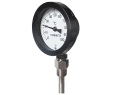
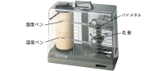
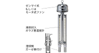

2021年
問題80 温熱環境要素の測定に関する次の記述のうち，最も不適当なものはどれか．
（1）熱式風速計は，白金線などから気流に奪われる熱量が風速に関係する原理を利用している．
（2）サーミスタ温度計は，2種類の金属の膨張率の差を利用している．
（3）自記毛髪湿度計は，振動の多い場所での使用は避ける．
（4）アスマン通風乾湿計は，周囲気流及び熱放射の影響を防ぐ構造となっている．
（5）電気抵抗式湿度計は，感湿部の電気抵抗が吸湿，脱湿によって変化することを利用している．
2021年
問題80 正解（2） 頻出度AAA
2種類の金属の膨張率の差を利用するのはバイメタル温度計である．サーミスタ温度計は電気抵抗式温度計の一種である．
バイメタル温度計は，2種類の金属の膨張率の差を利用している．
バイメタル式温度計は，膨張率の異なる2種類の金属（鉄・ニッケル合金とさらにマンガン，クロム，銅を添加した合金など）を貼り合わせ，温度による湾曲度の変化量から温度を求める（2023-78-3図参照）．
2021-80-1図 バイメタル式温度計の例

出典 有限会社横河計器製作所
https://yokokawakeiki.co.jp/product/thermo/item/?id=ATG
構造や原理はこちらのサイトが分かりやすい（旭計器工業株式会社 バイメタル温度指示計）．
電気抵抗式温度計は，金属線の温度による電気抵抗の変化を利用するものや，サーミスタ温度計がある．
サーミスタ(thermistor)とは，温度変化に対して電気抵抗の変化の大きい抵抗体のことである．最も利用多いNTCサーミスタはニッケル，マンガン，コバルト，鉄などの酸化物を混合して焼結したものである．
電気抵抗式温度計は精度が高く，遠隔で示度を読み取れる利点を持つ．
-(1) 熱線式風速計は，電流で加熱された熱線（白金線，タングステン線等），サーミスタ，トランジスタから気流に奪われる熱量が周囲風速に関係する原理を利用して気流速度を測定する．
熱線を一定電圧で加熱すると，風速に応じて熱線に不平衡電流が生じることを利用した定電圧式と，風速の変化による熱線の温度変化に応じて瞬時に入力電流が変化し熱線の温度を一定に保つ定温度式等がある．
製品によっては，エレメント(センサ部)の幾何学的形状によって指向特性があり，あらかじめ風向を知らないと正確な測定ができない．
風速計の取扱説明書にその解説がある（柴田科学 風速温度計取扱説明書19頁）．
-(3) 自記毛髪湿度計（2021-80-2図）は，いかにも振動には弱そうである．又，極端な低湿度，高湿度の環境で利用するのは適当でない．
2021-80-2図 自記毛髪湿度計

出典 株式会社佐藤計量器製作所
https://www.sksato.co.jp/7234-00/
-(4) アスマン通風乾湿計（2021-80-3図）は，湿球における水の蒸発量は気流によって異なるので，一定速度で回転するゼンマイ駆動又はモータ駆動の風車機構を内蔵する．湿球への通風速度は3m/s以上必要である．
2021-80-3図 アスマン通風乾湿計

出典 柴田科学株式会社
https://www.sibata.co.jp/item/598/ を基に作成
放射熱の影響を防ぐため温度計を挿入した金属管はクロームメッキを施されている．
測定点に設置し，通風開始後3分と4分の値を読み取り変化がなければ測定値とする．
相対湿度100％でない限り，湿球温度は常に乾球温度よりも低い値を示す．
-(5) 電気湿度計は，塩化リチウム等の吸湿性塩の電気抵抗変化を利用したもの，薄膜ポリマーフィルムの誘電体の誘電率が相対湿度で変化することを利用したもの等がある．遠隔測定，連続測定に適するが，センサ部の経年変化があるのでアスマン計などによる定期的な較正を必要とする．